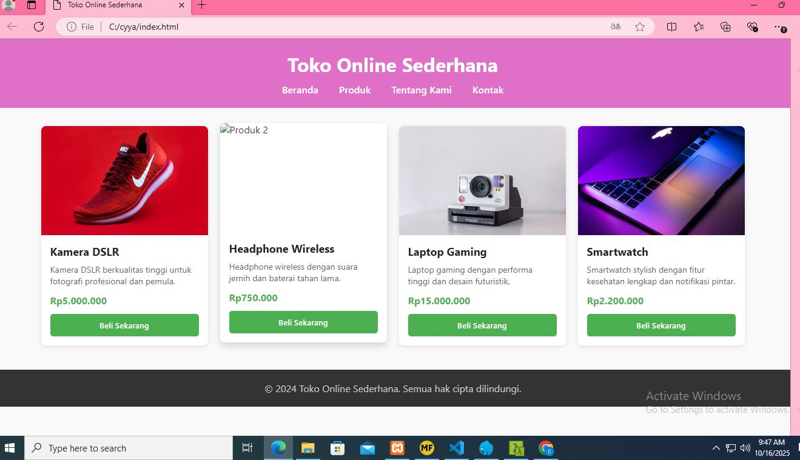

Membuat Website Statis
HTML & CSS
Saya siswa SMK jurusan Rekayasa Perangkat Lunak yang memiliki ketertarikan tinggi terhadap pengembangan website. Terampil menggunakan HTML, CSS, JavaScript, dan Laravel untuk membangun website responsif dan fungsional. Memiliki semangat belajar yang tinggi, teliti, dan siap berkembang di dunia industri teknologi.
2024 - Sekarang
2021 - 2024
HTML & CSS

Java (Netbeans)
PHP, Laravel, My SQL